v6/cohesion/COHESION.md. Research: .local/lanes/wave6/research/NAV.md.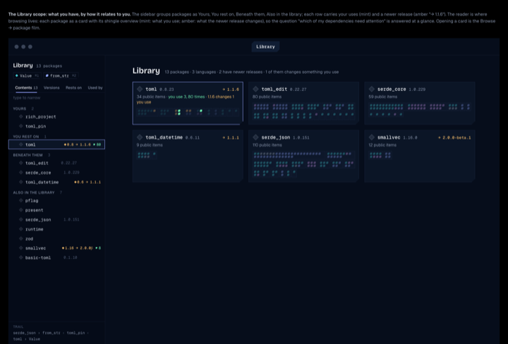
LibraryPackages grouped by how they relate to you; cards with shingle overviews (mint = you use, amber = a newer release changes it).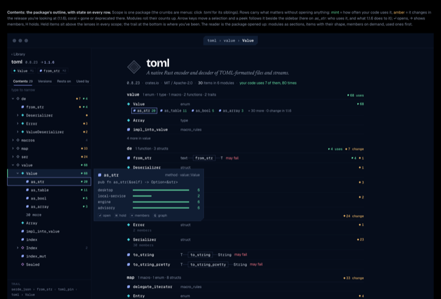
Package: ContentsState on every row, a peek that follows the arrows, held items, the trail; the package page opened up beside it.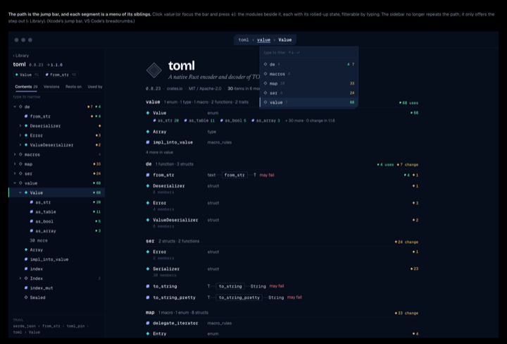
The path is the jump barEach segment opens its siblings with their rolled-up state.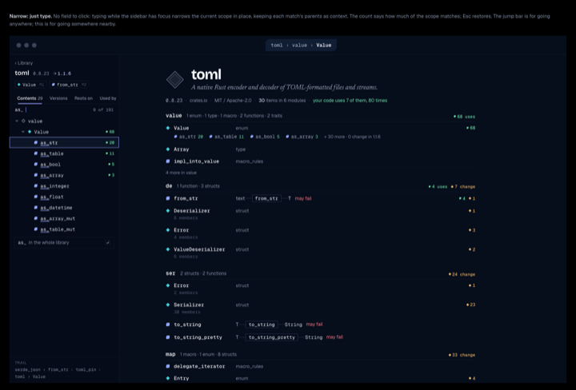
NarrowSearches the whole scope (collapsed rows too), then widens to the library with one ↵.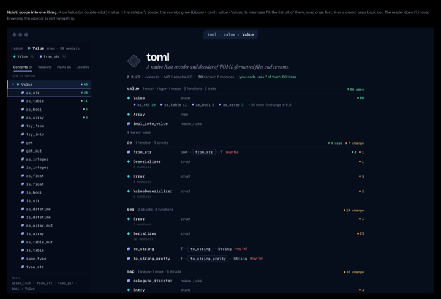
HoistScope into one thing; browsing the sidebar never moves the page.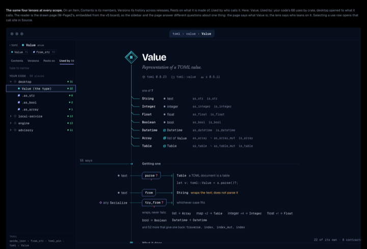
Item scopeThe same four lenses on Value: who leans on it, beside the drawn page.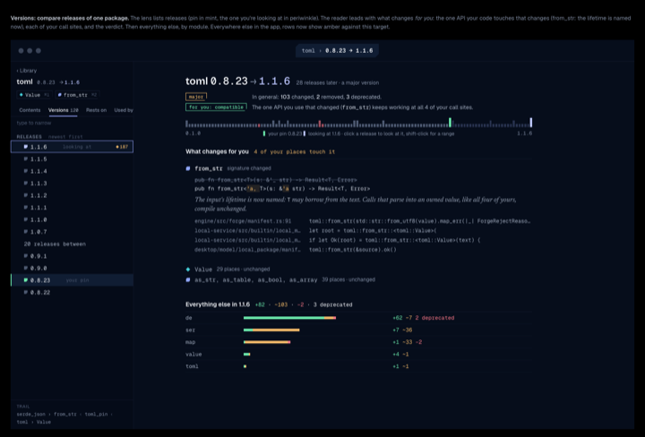
Versions: 0.8.23 → 1.1.6A two-sided verdict (in general / for you), then what changes for you with every call site, then the rest by module.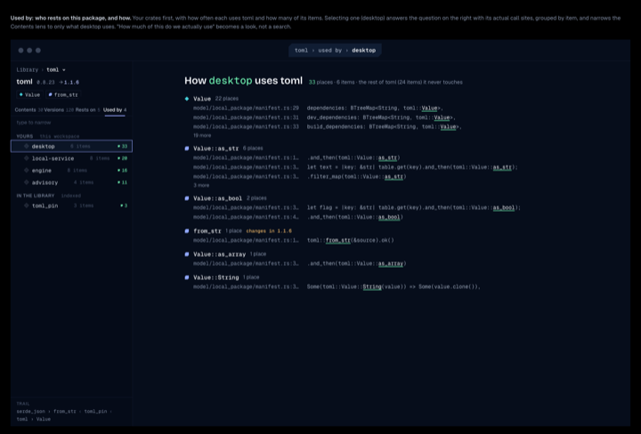
Used by: how desktop uses tomlIts call sites grouped by item, and how much of toml it never touches.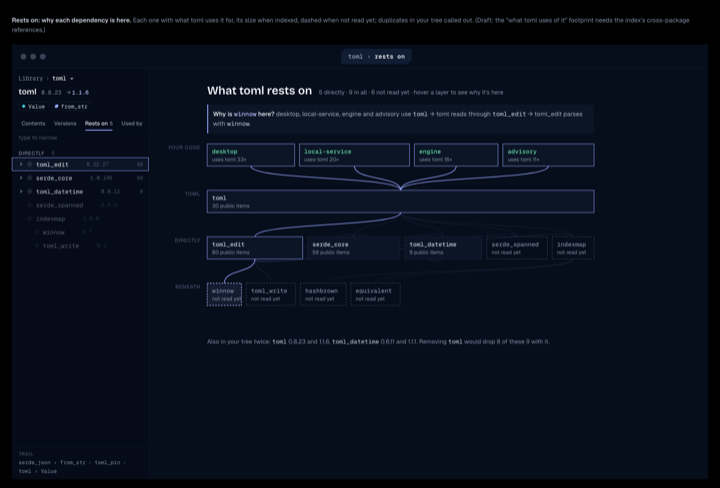
Rests on: strataYour code on top, layers beneath; hovering a block lights every path that explains why it's here.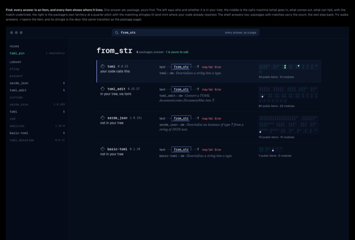
FindOne answer per package: its call shape and where it lives.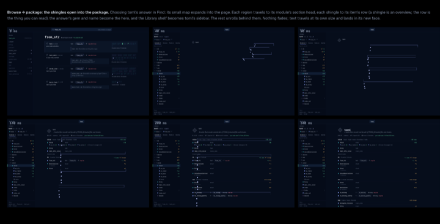
Browse → package (film)The shingles open into the package: marks and frames travel, text unrolls in place.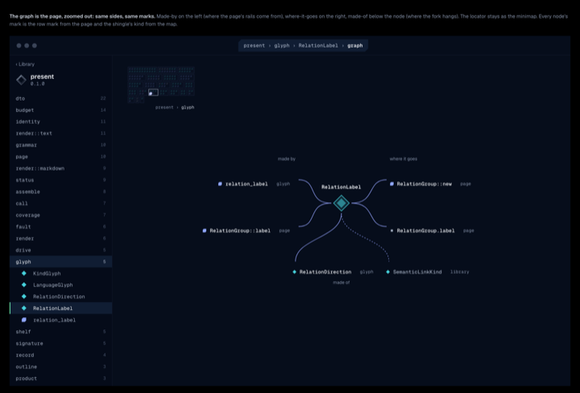
Graph: the page, zoomed outSame sides as the page: made-by left, where it goes right, made-of below.